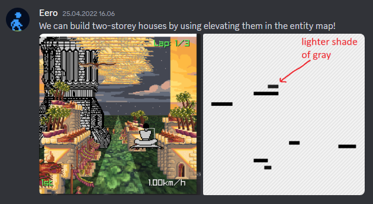
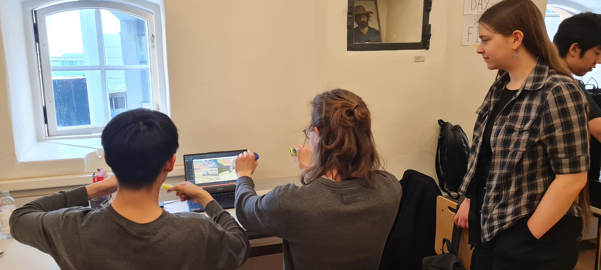
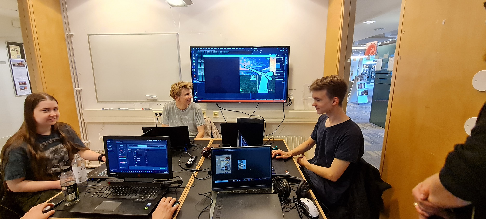
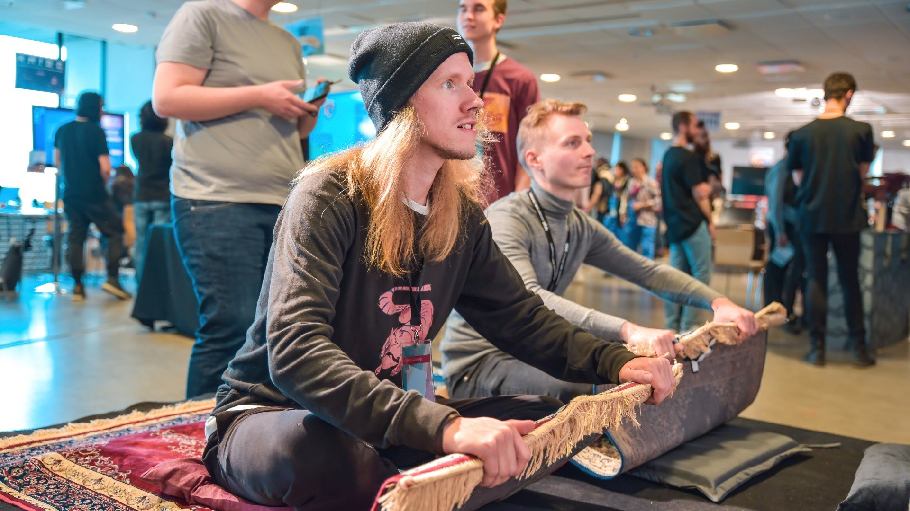

Rug Racers: Ultimate
Physical setup and some competitive racing!
Gameplay recording of kids playing for the first time
Introduction
Rug Racers: Ultimate began as an idea to take the punchy retro-arcade feel of old racing games such as OutRun and to put it on an actual carpet. Our first step was to study how to implement pseudo-3D rendering similar to OutRun. Instead of using an engine like Unity, we chose to use Raylib and to hand-craft the engine to allow for finding the exact right game / graphics feel.
There was one question: how would we design levels without an editor? I proposed using an image editing program as the level editor. By having a single image per entity-kind (i.e. small house, big house, tree), we could put them on different layers and place entities by painting pixels into them. Each image would be a top-down map of all entities of a kind in the level. The brightness of a pixel could control the height of an entity, which would allow for placing around clouds or birds or stacking buildings. I implemented the level image parsing (using stb_image) with hotreloading to allow for easy iteration, as well as a hotreloading JSON file where us programmers exposed as many tweakable variables as possible to let anyone on the team tweak the game. Not using an existing engine was a risk by possibly adding too much dependency on us programmers, so we tried to fight this as much as possible by being smart with our tools.

Rendering
To render the world efficiently, a Z-sorted array of each sprite entity is built during level loading and a slice of that array is rendered each frame depending on the player's Z-coordinate. The entities all have 3D world coordinates that get perspective-projected into 2D and drawn back-to-front using Raylib's 2D sprite drawing functions. Everything is drawn into a 320x360 rendertarget which is draw to the screen to emulate a lower-resolution screen. I wasn't the one to implement the level curvature math, but they were a special effect done by translating the sprites horizontally using a one-dimensional level curvature texture.
During playtesting, we got feedback that the sprites felt flickery. I added pixel art antialiasing, which helped a lot.
Physics
The player physics are simple in essence. A player has a position and a velocity which gets added to the position continuously. To make the artists job easy, I implemented pixel-perfect collision detection against sprites. For example, if an artist drew a hole in a sprite, then a player could just fly through that hole without extra work. This is implemented by checking all sprites in the Z-sorted list that the player might cross through in a frame, doing an AABB check, and looping through the rectangular area of pixels that the player would collide with. If most of the pixels are opaque, the player dies and respawns. If some of the pixels are opaque, then an average "bounce" vector is found, and is applied to the player velocity along with a speed reduction, sound effect, dust particles and joycon rumble. If all pixels are transparent, we do nothing.
When a player is respawned after they die, they should spawn in an open / safe position and not in the middle of a stream of buildings. To do this, I keep track of the player's position history and spawn them where they were a few seconds ago. This player history turned out to be useful in other places too. I used it to implement the slipstream feature, which is a wind tunnel that a player leaves behind, giving the other player an easier time to catch up. I also used the history to record a flythrough of the map into a file, and made the main menu camera fly through the world using the recording. This made the main menu feel more energetic and inviting. We had Gotland Game Conference in mind when designing the game and wanted to attract a lot of attention from bystanders - just like a real arcade game would.
Unfortunate playtester hitting all the obstacles...
Player Input
The game idea was pitched and greenlit, but we hadn't yet discussed how to actually make a carpet controllable. As long as we had up/down/left/right movement, we'd be happy. There were various ideas: distance-measuring strings attached to the ends of the carpet, joysticks underneath, taped wii controllers... We settled on Nintendo switch controllers and velcro tape thanks to their light and compact form. It was my task to figure out the rest.
A joycon has both an accelerometer and a gyroscope sensor. The accelerometer tracks acceleration in each axis, while the gyroscope tracks the angular momentum about each axis. The goal was to extract the absolute position of the controller (holding the carpet up should steer up, down to down, etc...). The proper way to find the absolute absolute position would be to integrate the accelerometer data to get the velocity, and to integrate the velocity to get the position. However, small errors would make the position and velocity drift away from their true values quickly. The same issue applies to integrating absolute orientation using the gyroscope input.
After some experimentation with drift-reduction attempts, I realized that I could utilize the earth's gravity that shows up in the accelerometer data as a constant source of acceleration. It changes depending on how the controller is rotated / which axis the gravity is facing towards. This can be used for finding the absolute rotation! My solution was to take this estimate, apply smoothing to it to reduce noise from small accelerations, and add back some gyroscope input to get back some sharpness.
 Playtesting in action. In this version, we didn't have carpets yet and had two joycons per player. Only near the end, I scrapped this in favor of one joycon in the middle of a carpet which resulted in easier, more predictable controls.Other Fun Things
There were lots of little polish features that I worked on. For example, I made the particle system sprite player, the respawn screen transitions, camels and birds that bounce away when you hit them, and the interactive main menu. But my favorite is the scoreboard and the carpet-controlled text editor for entering your name. You can see it in the first video at the top of the page at 2:29. This was the true challenge of the game to many players.
The game can be found at https://kuehldy.itch.io/rugracers. You can play it on PC if you have two Nintendo Switch joycons and two fashionable carpets... or a keyboard if you're boring.
 A normal day at the office Rug racing at the Gotland Game Conference